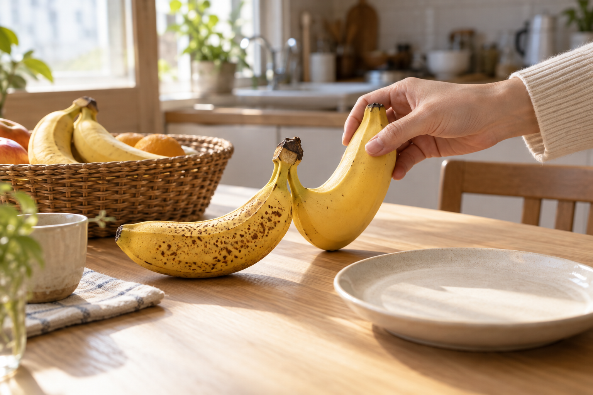

EDUCATION ·
바나나를 한 개씩
떼어 놓는 아침
노란 바나나와 점이 막 생긴 바나나를 나란히 보며, 오늘 먹을 것과 내일 남길 것을 가늠해 봅니다. 과일을 권하는 말도 이 작은 순서에서 시작할 수 있습니다.

아침 식탁에 바나나 한 송이를 올려 두면, 먼저 손이 가는 것이 있습니다. 껍질에 작은 점이 생겨 오늘 먹기 좋게 보이는 한 개입니다. 아직 단단하고 노란 바나나는 하루쯤 더 두어도 괜찮아 보입니다. 같은 송이에서 떼어 냈을 뿐인데, 과일의 시간이 조금씩 다르다는 것을 금세 알게 됩니다.
이 장면은 과일을 보관하는 요령을 외우는 일보다 먼저 옵니다. 오늘 아침에 먹을 한 개를 접시에 두고, 내일 먹을 한 개는 바구니에 남겨 둡니다. 누군가가 학교 가는 길에 챙길지, 오후에 집에 돌아와 먹을지도 함께 떠올립니다. 과일은 모두 한꺼번에 가장 좋은 상태가 되지 않습니다. 그래서 먹을 순서를 정하는 말이 필요합니다.
좋아하는 과일 다음에, 먹을 때를 묻습니다
과일코디네이터 교육에서도 “바나나를 좋아하세요?”라는 질문만으로는 충분하지 않을 때가 있습니다. “오늘 드실 건가요, 며칠 뒤에 드실 건가요?”라고 한마디를 더하면 답이 달라집니다. 바로 먹을 과일과 조금 기다릴 과일을 함께 고를 수 있고, 한 번에 너무 많이 익어 곤란했던 경험도 자연스럽게 이야기됩니다.
아이와 함께라면 더 쉬운 연습이 됩니다. 바나나 두 개를 놓고 어느 것이 오늘의 간식인지, 어느 것이 내일의 간식인지 물어봅니다. 정답을 맞히게 하는 것이 아닙니다. 껍질의 색과 단단함을 보고 자기 말로 이유를 붙여 보는 일입니다. 과일을 살피는 눈은 이렇게 식탁 위의 작은 선택에서 자랍니다.
과일을 알맞게 먹는 일은
가장 좋은 한 개를 고르는 일보다, 다음 한 개의 때를 남겨 두는 일에 가깝습니다.
바나나가 아니어도 같습니다. 조금 먼저 익은 배, 향이 올라온 복숭아, 오늘 씻어 먹을 포도에도 각자의 순서가 있습니다. 장을 본 날에는 봉지 안의 과일을 잠깐 펼쳐 보며 먼저 먹을 것과 기다릴 것을 나누어 봅니다. 냉장고와 식탁 사이에 짧은 계획이 하나 생깁니다.
교육은 복잡한 설명을 더하는 일이 아니라, 이미 집에 있는 장면을 또렷하게 보는 데서 시작합니다. 아침에 바나나 한 개를 떼어 놓으며 “이건 오늘, 이건 내일”이라고 말해 보는 일. 그 말이 쌓이면 과일은 막연히 사 두는 물건이 아니라, 하루의 리듬에 맞춰 끝까지 먹는 식탁의 친구가 됩니다.
KFA Editorial · 생활 속 장면을 구성한 에세이입니다. 특정 인물의 취재 기록이 아닙니다.